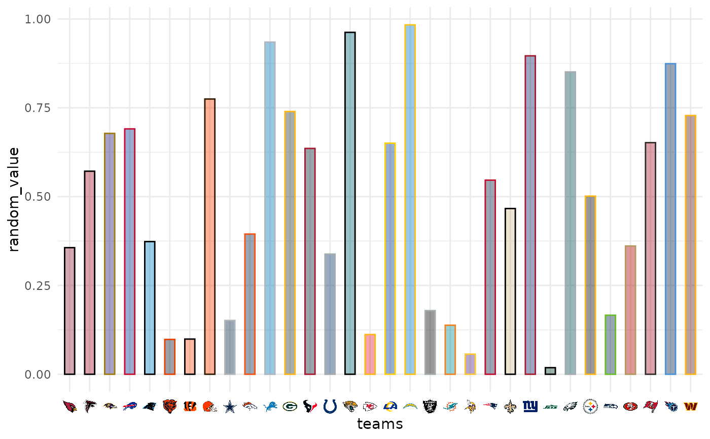

![[Deprecated]](figures/lifecycle-deprecated.svg)
These functions are convenience wrappers around a theme call
that activates markdown in x-axis and y-axis labels
using ggtext::element_markdown().
Value
A ggplot2 theme created with ggplot2::theme.
Details
These functions are a wrapper around the function calls
ggplot2::theme(axis.text.x = ggtext::element_markdown()) as well as
ggplot2::theme(axis.text.y = ggtext::element_markdown()).
They are made to be used in conjunction with scale_x_nfl() and
scale_y_nfl() respectively.
Examples
# \donttest{
library(nflplotR)
library(ggplot2)
team_abbr <- valid_team_names()
# remove conference logos from this example
team_abbr <- team_abbr[!team_abbr %in% c("AFC", "NFC", "NFL")]
df <- data.frame(
random_value = runif(length(team_abbr), 0, 1),
teams = team_abbr
)
if (utils::packageVersion("gridtext") > "0.1.4"){
ggplot(df, aes(x = teams, y = random_value)) +
geom_col(aes(color = teams, fill = teams), width = 0.5) +
scale_color_nfl(type = "secondary") +
scale_fill_nfl(alpha = 0.4) +
scale_x_nfl() +
theme_minimal() +
# theme_*_nfl requires gridtext version > 0.1.4
theme_x_nfl()
}
#> Warning: `scale_x_nfl()` was deprecated in nflplotR 1.3.0.
#> ℹ This function is slow and inferior to theme elements; use `element_*()`
#> functions instead.
#> Warning: `theme_x_nfl()` was deprecated in nflplotR 1.3.0.
#> ℹ This function is slow and inferior to theme elements; use `element_*()`
#> functions instead.

# }